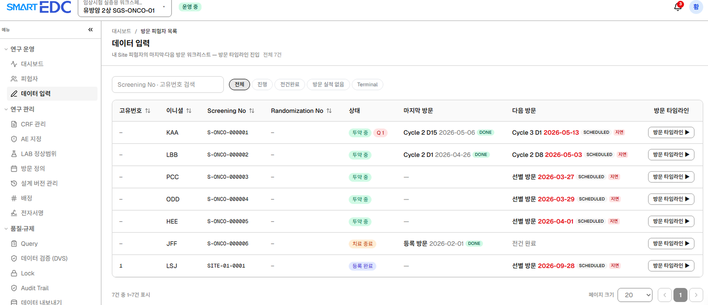
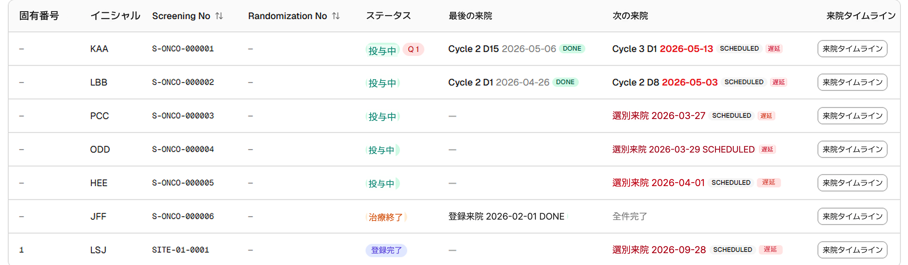
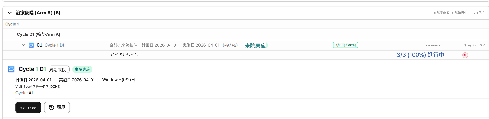
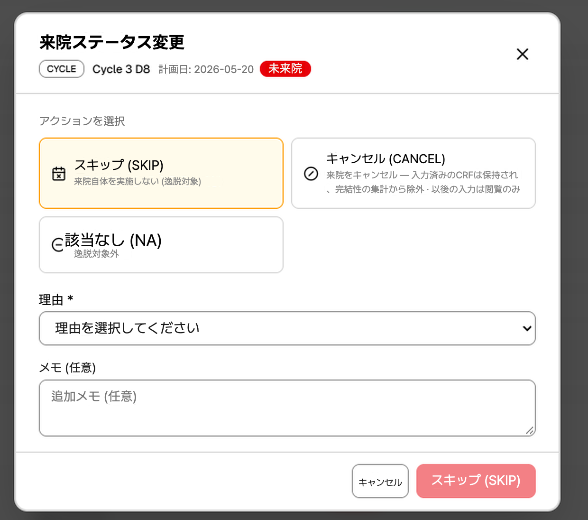
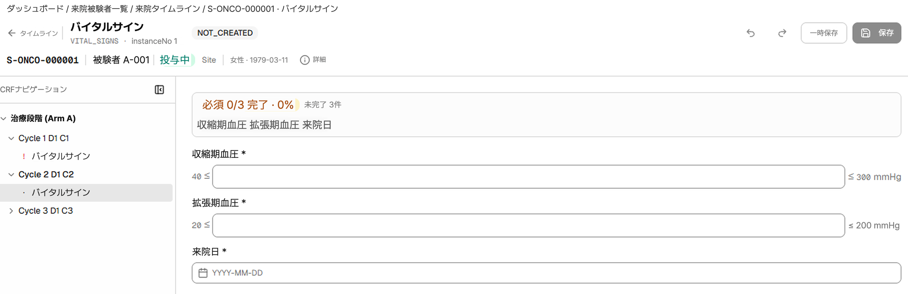
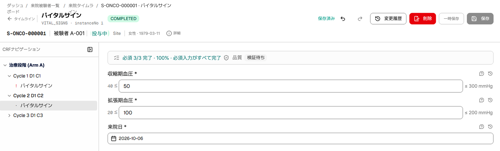

データ入力
SCR-VISIT-010·003·007 · SCR-CRF-005 · ワークリスト · 来院タイムライン · CRF入力 · Query回答
データ入力一覧
- 1.1画面構成
- 1.2一覧の読み方
1.1画面構成
概要
毎日データを入力する人が最初に開く画面です。担当の被験者ごとに最後に実施した来院と次に予定されている来院を1行にまとめ、今日何をすべきかを一目で分かるようにします。実際の入力はこの一覧からは行わず、来院タイムラインを経由して、その来院のCRFに入って行います。
画面説明

左のメニュー 研究運営 > データ入力 — この画面へいつでも入れる入口です。
検索 — Screening No または固有番号で行を絞り込みます。
ステータスフィルター 5種 — 全体 · 進行中 · 全件完了 · 来院実績なし · Terminal です。各分類の意味は 1.2 の表を参照してください。
来院タイムライン ▶ — その被験者の来院すべてを開きます 2.1。行のどこを選んでも、同じ画面に移動します。
移動経路はダッシュボード / 来院被験者一覧です。
タイトルの下に、この一覧の内容と全件数が表示されます。担当Siteが決まっているロールには自Site固定バッジも表示され、この場合、一覧は自分のSiteの被験者だけに自動で絞り込まれます。
ステータス列 — 被験者の現在のステータスと、未処理Queryの件数です 1.2。
最後の来院列 — 直前に実施が終わった来院と、実際の来院日です。
次の来院列 — 最も近い未完了の予定来院と予定日です。2つの列の日付は基準が異なります 1.2。
表示件数 · ページサイズ · ページ移動 — 一覧の下部にまとめて表示されます。
アクセス経路
- • 左のメニュー 研究運営 > データ入力
- • ダッシュボードの 本日の予定来院 ウィジェットの行
- • ダッシュボードの 本日の予定来院 ウィジェットの 来院ワークリスト →
- • ダッシュボードの 来院状況 ウィジェットの タイムライン
注意事項
誤解しやすい動作
- • 担当Siteが決まっているロール（研究責任者・研究看護師・臨床開発モニター）には、自分のSiteの被験者だけが表示されます。一覧に表示されるはずの被験者が見えない場合は、まずSiteの割り当てを確認してください。検索やフィルターでは、担当範囲外の被験者を呼び出すことはできません。
1.2一覧の読み方
概要
1行が被験者1名です。中央の2つの欄がこの画面の要で、左は既に終わった来院、右はこれから行う来院です。2つの欄とアクション列はいずれも、その被験者の来院タイムラインにつながっており、来院の欄を選ぶとその来院が選択された状態で開きます。
画面説明

最後の来院欄 — 選択すると、その来院が選択された状態でタイムラインが開きます。来院名の横の日付は実際の来院日です。
次の来院欄 — 選択すると、その来院が選択された状態でタイムラインが開きます。来院名の横の日付は予定日です。
来院タイムライン ▶ — 特定の来院を指定せず、その被験者の来院すべてを開きます。
ステータス — 被験者の現在の進行状況です（「投与中」· 「治療終了」· 「登録完了」など）。
Q N — その被験者の未処理Query件数です。0件の場合は表示されません。
DONE — 最後の来院欄にだけ付く、実施完了の表示です。
SCHEDULED と 遅延 — 前者は予定の状態で、後者は許容期間（Window）を過ぎたことを示す警告です。期間に入ったばかりの来院には間近が表示されます。
全件完了 — 実施実績があり、これ以上行う来院がない状態です。予定来院なし（オレンジ）と混同しないでください（下の表を参照）。
ステータスフィルター4種（全体を除く）
| フィルター | その分類に入る行 | すべきこと |
|---|---|---|
| 進行中 | 次の来院が残っている被験者 | 予定日に合わせて来院と入力を実施 |
| 全件完了 | 実施実績があり、次の来院がない被験者 | なし — 正常終了の状態 |
| 来院実績なし | 実施実績も予定来院もどちらもない被験者 | 対応が必要 — 来院が展開されていない原因を確認 |
| Terminal | 終了状態で固定された被験者 | なし — 照会のみ可能 |
注意事項
必須確認 データ破損 · フォーム完了不可
- • 「全件完了」と「予定来院なし」は意味が反対です。前者はやるべきことがないという意味です。後者は、来院が1つも展開されておらず、原因を探す必要がある状態です。2つの文言は同じ欄に表示されるため、色（グレー · オレンジ）と文言を一緒に確認してください。
来院タイムライン
- 2.1タイムラインの構成
- 2.2来院行とCRF行
- 2.3来院ステータス変更
- 2.4スキップ結果
2.1タイムラインの構成
概要
一人の被験者の来院すべてを、研究スケジュールの順に表示する画面です。来院は選別段階 · 治療段階のようなグループにまとめられており、周期治療はその中でCycleに分かれます。データ入力も来院ステータスの変更も、すべてこの画面から始まります。
画面説明

Cycle 手動追加 — 定義された周期のほかに、Cycleをさらに追加します。直前のCycleが終了している場合にのみ選択できます。
来院手動追加 — 計画になかった来院（非計画・随時来院）を追加します。
Gantt タイムラインタブ — 同じ内容を日程バーの形で表示します。初期表示は来院グループタブです。
移動経路はダッシュボード / 来院被験者一覧 / 被験者 · 来院タイムラインです。被験者画面から入った場合は、経路が異なります。
被験者の識別行 — Screening No · 被験者番号 · 被験者ステータス · Site です。
来院の集計 — 総件数 · 来院実施 · 来院進行中 · 来院予定 · 未来院 です。未来院が残っている場合は、まずその来院を整理する必要があります 2.3。
来院グループ — 研究スケジュールの大きな区切りです。かっこ内の数字はそのグループの来院数で、タイトルを選ぶと折りたたみ・展開できます。
グループ右側の集計 — そのグループ内の、ステータス別の件数です。
来院行の構成 — 基準 · 計画日 · 実施日 · 許容期間 · ステータスバッジ の順に表示されます。
紐づくCRFなし — その来院に紐づくCRFがないという意味です。入力するデータがない来院で、紐づけは来院定義のCRFマッピングで管理します。
アクセス経路
- • データ入力一覧 → 行の選択、または来院タイムライン ▶ 1.2
- • データ入力一覧 → 最後の来院 · 次の来院欄（その来院が選択された状態で開きます）
- • 被験者一覧 → 行のアクションメニュー → 来院
- • ダッシュボードの 来院状況 ウィジェット → 被験者を選択
注意事項
誤解しやすい動作
- • 来院集計の「未来院」は、そのままにしても消えません。予定日を過ぎた来院は、実施するか、スキップ・キャンセル・該当なしのいずれかで理由を添えて整理する必要があります 2.3。整理されていない未来院は、その被験者のデータが完結していないものとして集計されます。
2.2来院行とCRF行
概要
来院行の左にある展開マークを選択すると、その来院に紐づいたCRFが1行ずつ現れます。CRF行を選択すると入力画面に移動します 3.1。来院行を選択すると、画面下部にその来院の詳細が開き、そこでステータス変更と履歴の確認を行います。
画面説明

来院行 — 選択すると、下にその来院の詳細が開きます。左の展開マークで、紐づいたCRFの一覧を展開します。
CRF行 — 選択すると、そのCRFの入力画面に移動します 3.1。
ステータス変更 — 来院の実施有無を記録するか、スキップ・キャンセル・該当なしとして整理します 2.3。
履歴 — その来院で起きたステータス変更の記録を確認します。
グループのタイトルと来院数です — 治療段階 (Arm A) のように、試験群も併せて表示されます。
グループ右側の集計 — そのグループの、ステータス別の件数です。
Cycle と、その中の来院の区分です。周期治療では、同じ来院がCycleごとに繰り返されます。
来院単位の必須入力集計 — その来院に紐づいたCRFの必須項目が、どれだけ埋まっているかです。
CRFステータス · Queryステータス 列の見出し — 下のCRF行のバッジが、この2つの軸を表します。
CRF行のバッジ — 左から必須入力集計 · 入力ステータス · Query表示です。Qが見える場合、そのCRFに処理すべきQueryがあります 3.3。
選択した来院の詳細ヘッダー — 来院名 · 来院種別 · 現在のステータス です。
詳細の主な値 — 計画日 · 実施日 · 許容期間（Window） · Visit-Event ステータス · Cycle番号 です。
注意事項
誤解しやすい動作
- • 来院行の集計と、CRF行の集計は範囲が異なります。来院行はその来院に紐づくCRF全体を合算した値で、CRF行はそのCRF1つの値です。来院が100%と表示されていても、紐づくCRFが1つだけであれば同じ数字になるため、どちらの数字を見ているかを確認して判断してください。
2.3来院ステータス変更
概要
予定日を過ぎても実施されていない来院を整理するウィンドウです。現在のステータスで可能な操作だけが表示されるため、キャプチャのように未来院のステータスでは、スキップ・キャンセル・該当なしの3つが表示されます。どれを選んでも理由の入力は必須で、記録は監査証跡に残ります。
画面説明

スキップ (SKIP) — 来院そのものを実施しなかったという記録です。逸脱（Deviation）の対象になります。
キャンセル (CANCEL) — 入力済みのCRFは削除されず、完結性の集計からだけ除外されます。以後の入力は参照のみになります。
該当なし (NA) — この被験者には該当しない来院です。逸脱の対象ではありません。
理由 — 必須です。スキップは、プロジェクトに登録された理由の一覧から選択します。一覧を読み込めない場合は、直接入力欄に代わります。
メモ — 任意です。一覧の理由だけでは説明が足りない場合に追記します。
実行ボタン — 選択した操作の名前が表示されます。理由を選ぶまでは薄く表示され、選択できません。横のキャンセルはウィンドウを閉じるだけです。
対象の来院 — 来院種別 · 来院名 · 計画日 · 現在のステータス です。ステータスバッジが「✕ 未来院」であることを確認してから進めてください。
閉じる — ウィンドウを閉じます。
操作の選択 — 選んだカードに色の枠が付きます。カードを変えると、入力中の理由とメモは初期化されます。
理由の横の*は必須項目の印です。
メモの横の(任意)は、空欄のままで構わないという印です。
操作4種 — 状況に合ったものだけが表示されます
| 操作 | 表示される状況 | 逸脱の対象 | 元に戻す |
|---|---|---|---|
| 来院実施の処理 | 来院が進行中のとき | 実施日により判定 | 元に戻せない |
| スキップ (SKIP) | 未来院 · 実施記録なし | 対象 | 復元可能 |
| キャンセル (CANCEL) | 未来院または進行中 | 対象外 | 復元可能 |
| 該当なし (NA) | 未来院 · 実施記録なし | 対象外 | 復元可能 |
注意事項
必須確認 データ破損 · フォーム完了不可
- • 周期（Cycle）の来院を「キャンセル」すると、次のCycleを追加できなくなります。終了として認められるのは実施・スキップ・該当なしであり、キャンセルは含まれないためです。誤って作成したCycleは、キャンセルではなく該当なしで整理してください。
2.4スキップ結果
概要
スキップを実行すると、ウィンドウが閉じてタイムラインに戻ります。その来院行のステータスバッジが変わり、来院名に取り消し線が付くため、一覧からすぐに区別できます。実施日は空欄のままで、入力した理由はその来院の履歴で確認できます 2.2。
画面説明

来院が属するグループとCycleです — スキップはその来院1つだけに適用され、同じグループの他の来院には影響しません。
来院行 — 来院名に取り消し線が付きます。
行の中央の実施日は—のまま残ります。横の許容期間は計画値のまま維持されます。
行の右端の ⊘ スキップ済み — スキップ処理の結果表示です。元に戻すには、その来院を再度選択してステータス変更 > 復元を実行します。
紐づくCRFなし — この来院に紐づくCRFがないという意味で、スキップとは無関係の別の表示です。
来院ステータスバッジ7種
| バッジ | 意味 | 入力可否 |
|---|---|---|
| ○ 来院予定 | 予定日がまだ残っている来院 | 可能 |
| ◐ 来院進行中 | 実施が始まった来院 | 可能 |
| ✓ 来院実施 | 実施が終わった来院 | 可能 |
| ✕ 未来院 | 予定日を過ぎたが整理されていない来院 | 可能 — 整理が必要 |
| ⊘ スキップ済み | 実施しないと記録された来院（逸脱の対象） | 不可 |
| ⊗ キャンセル | キャンセルした来院 — 既存のCRFは維持 | 参照のみ |
| – 該当なし | この被験者には該当しない来院 | 不可 |
注意事項
必須確認 データ破損 · フォーム完了不可
- • スキップは逸脱（Deviation）として集計されます。元に戻すことはできますが、処理と復元はどちらも履歴に残るため、理由を確認しないまま一時的に押してみるような使い方はしないでください。来院をまだ実施できるなら、ステータスは変えずにそのままにしてください。
CRFデータ入力
- 3.1入力画面
- 3.2保存完了
- 3.3Query回答
3.1入力画面
概要
実際のデータを入力する画面です。左は同じ被験者のCRFを行き来するナビゲーション領域で、右が入力領域です。初めて開いたときは、データがまだ作られていない状態で、保存を実行した時点で初めて作成されます。画面を開いたまま離れると、何も残りません。
画面説明

収縮期血圧 — 数値の入力欄です。両脇の値が許容範囲です。
拡張期血圧 — 同じ方法で入力します。
来院日 — カレンダーアイコンで日付を選ぶか、直接入力します。
一時保存 — 入力中の内容を一時的に保管します。検証を経ず、監査記録も残らないため、確定保存ではありません。
保存 — 入力を確定します。このときデータが作成され、検証と監査記録が同時に行われます 3.2。
移動経路はダッシュボード / 来院被験者一覧 / 来院タイムライン / 被験者 · CRF名です。
NOT_CREATED — まだ一度も保存していないという表示です。保存するとIN_PROGRESSまたはCOMPLETEDに変わります 3.2。
CRFのコードと回次番号です。同じ来院で繰り返し収集するCRFは、回次が増えます。
被験者の識別行 — Screening No · 被験者番号 · ステータス · Site · 性別 · 生年月日 です。詳細で被験者の情報を確認します。
CRFナビゲーション — 同じ被験者の別の来院・CRFへすぐに移動します。折りたたみアイコンで領域を隠せます。
現在開いているCRFが強調表示されます。感嘆符の印が付いた項目は、処理すべきことが残っているCRFです。
必須入力集計 — 「0/3 完了 · 0%」と未完了件数です。必須項目をすべて埋めるまでは、入力完了としては集計されません。
未入力項目の一覧 — 選択すると、その入力欄に移動します。項目の多いフォームで、空いている欄を探すときに使います。
入力欄の両脇にある許容範囲と単位です。範囲を外れた値は、保存時の検証で止められます。
注意事項
必須確認 データ破損 · フォーム完了不可
- • 「一時保存」は確定保存ではありません。一時保存した内容は検証を経ず、監査記録も残らないため、そのまま画面を離れると、そのデータは正式なデータとして集計されません。入力が終わったら、必ず保存して確定してください。
3.2保存完了
概要
保存を実行すると、データが作成され、画面のあちこちの表示も同時に変わります。必須項目をすべて埋めた状態で保存したため入力ステータスは完了になり、まだ検証を受けていないため品質ステータスは検証待ちです。データができると同時に、変更履歴と削除が現れます。
画面説明

保存 — 入力を確定します。
ステータスがCOMPLETEDに変わり、保存済みが表示されます。必須項目が残っていた場合はIN_PROGRESSになります。
変更履歴 — 誰が、いつ、どの値をどのように変えたかを確認します。保存したデータがある場合にのみ表示されます。
削除 — 入力したデータを取り下げます。記録は残り、理由の入力が必要です。
必須入力集計が「3/3 完了 · 100%」と「すべての必須入力が完了」に変わります。
品質ステータス — 検証待ちです。原資料照合（SDV）が終わるとSDV完了に、処理すべきQueryまでなければCLEANになります。
項目ごとに付く2つのアイコン — 左はその項目のQuery、右はその項目の変更履歴です。データが作成された後に表示されます。
保存された値が入力欄にそのまま表示されます。値を直して再度保存するときは、変更理由の入力が求められます。
CRFナビゲーションで、現在のCRFが強調表示されます。
移動経路は保存前と同じです — 保存しても画面は移動しません。
入力ステータスと品質ステータス — 別々の2つの軸
| 軸 | 表示 | 意味 |
|---|---|---|
| 入力ステータス | NOT_CREATED | まだ一度も保存していない（データ未作成） |
| 入力ステータス | IN_PROGRESS | 保存したが必須項目が残っている |
| 入力ステータス | COMPLETED | 必須項目をすべて埋めて保存した |
| 品質ステータス | 検証待ち | 原資料照合（SDV）が終わっていない |
| 品質ステータス | SDV完了 | SDVは終わったが、未完結またはQueryが残っている |
| 品質ステータス | CLEAN | 入力完了 + SDV全件 + 処理すべきQueryなし |
注意事項
誤解しやすい動作
- • 入力完了と品質の完結は別のものです。「3/3 完了 · 100%」は必須欄をすべて埋めたという意味にすぎず、その値が医療機関の原資料と一致しているかは、まだ確認されていません。データを最終確定するには、原資料照合（SDV）とQueryの処理がともに終わっている必要があります。
3.3Query回答
概要
入力した値に確認依頼（Query）がかかると、その項目のすぐ下に回答カードが開きます。値を直す作業と回答を書く作業を同じ場所で行い、フォームの保存を1回押すだけで両方がまとめて処理されます。回答だけを送るための別画面に移動する必要はありません。
画面説明

値の修正 — 原資料を確認した結果、値が誤っていた場合は、この入力欄でそのまま直します。
解消方法がその場で変わります — 値を直すと値の訂正、直さなければ現状維持になります。自分で選ぶ項目ではなく、値を変えたかどうかで決まる判定結果です。
回答コメント — 必須で、5文字以上の入力が必要です。原資料を確認した結果と、修正の有無を記述します。
このコメントを変更理由として併用 — 値を直した場合に別途求められる変更理由を、このコメントで代えます。同じ内容を2回入力する必要はありません。
保存 — 値の修正と回答が一緒に処理されます。回答だけが保存され、値が残るということは起きません。
IN_PROGRESS — 値を修正中のため、入力ステータスが進行中と表示されます。
Query未処理 N件 — このCRFで回答が必要な件数です。回答を終えたがまだクローズされていない件は、クローズ待ちとして別に表示されます。
項目の右側のQueryアイコンと件数です。選択すると、その項目のQueryを照会します。
カードの見出し — 処理ステータス · 重要度 · 件名です。
担当者と折りたたみです。項目の多いフォームでは、カードは折りたたまれた状態で始まります。
問い合わせ本文 — 確認を依頼した内容です。回答の前に必ず読んでください。
(5文字以上) — この条件を満たさないと、保存が拒否されます。
履歴・詳細を見る — そのQueryの全体のやりとりと処理履歴を確認します。
注意事項
誤解しやすい動作
- • Queryは誰でも回答できるわけではありません。回答権限があるロールであり、かつその件の担当者または登録者である必要があります。カードは見えるのに入力できない場合は、自分が担当者ではない場合なので、Query一覧で担当者を確認して引き継いでください。